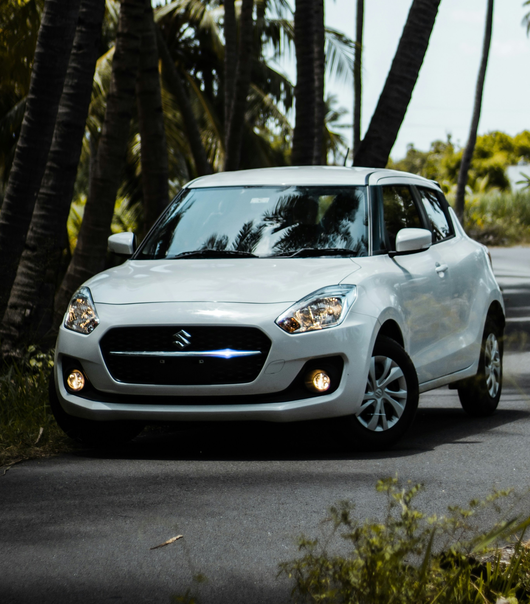

01 - company
Founded in 1909 in Hamamatsu as a loom manufacturer, Suzuki launched Japan's first mass-produced minicar, the "Suzulight," in 1955. Today, operating in over 200 countries and regions, Suzuki continues to uphold its single belief: "to create things that are small, light, and truly useful."
- 1909Founded
- 200+Countries
- 68,000+Employees
- 3M+Cars / year
02 - history
Loom maker
Michio Suzuki founds a textile machinery business in Hamamatsu.
Suzulight
Japan's first proper kei car. Compact, affordable, and built for narrow streets.
Jimny
The first Jimny rolls out — a lightweight 4WD built for terrain that other cars avoid.
India
Maruti Suzuki launches. It becomes and remains India's best-selling car brand.
Swift
The first Swift: honest, light, fun to drive. It finds buyers on every continent.
New Swift — 4th generation
Lighter body, mild-hybrid engine. The story continues.
03 - models
Swift 2023 — 4th generation

The new Swift, launched in 2023, is based on the concept of a sophisticated smart compact that transforms everyday travel into fun. Its design features an advanced, rounded form that envelops the entire body. Thanks to a newly developed 1.2L inline 3-cylinder engine and 48V mild hybrid system, it achieves a high fuel efficiency of up to 25.4 km/L. Furthermore, its safety features have been significantly improved from its predecessor, resulting in a significant improvement in overall safety.
- Engine
- 1.2L Dualjet Mild Hybrid
- Output
- 82 PS
- Transmission
- CVT / 5MT
- Fuel economy
- 25.4 km/L
- Weight
- from 890 kg
- Dimensions
- 3,860 × 1,695 × 1,500 mm
- Price
- Starting at RM 47,700
Hustler 2020 — 2nd generation
.jpg)
With the motto "A more active light crossover," it achieves a more refined design and functionality that combines toughness and strength. Mild hybrid is standard equipment on all types. The naturally aspirated engine boasts high performance with a WLTC mode fuel efficiency of 25.0 km/L.
- Engine
- 658cc Mild Hybrid
- Output
- 64 PS / 98 PS (turbo)
- Transmission
- CVT
- 4WD
- Available
- Weight
- from 800 kg
- Dimensions
- 3,395 × 1,475 × 1,665 mm
- Price
- Starting at RM 45,000
Jimny Sierra 2018 — 4th generation
_1X7A6314.jpg)
This compact 4WD is a remake of the "Jimny 8" released in 1977. Compared to the third generation, it features a more square body style and black overfenders, resulting in a wilder look. It is equipped with a newly developed 1.5L "K15B" engine, achieving a maximum output of 102ps and a maximum torque of 130Nm. Its greatest feature is its off-road capability, and it employs a newly developed ladder frame that strengthens torsional rigidity by 1.5 times compared to the previous model. The traditional 3-link rigid axle suspension, brake LSD traction control, hill hold control, and hill descent control are standard equipment on all models.
- Engine
- 1.5L K15B
- Output
- 102 PS
- Transmission
- 4AT / 5MT
- 4WD
- AllGrip Pro
- Weight
- from 1,090 kg
- Dimensions
- 3,645 × 1,645 × 1,730 mm
- Price
- Starting at RM 59,400